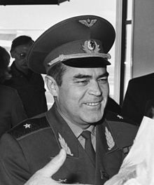
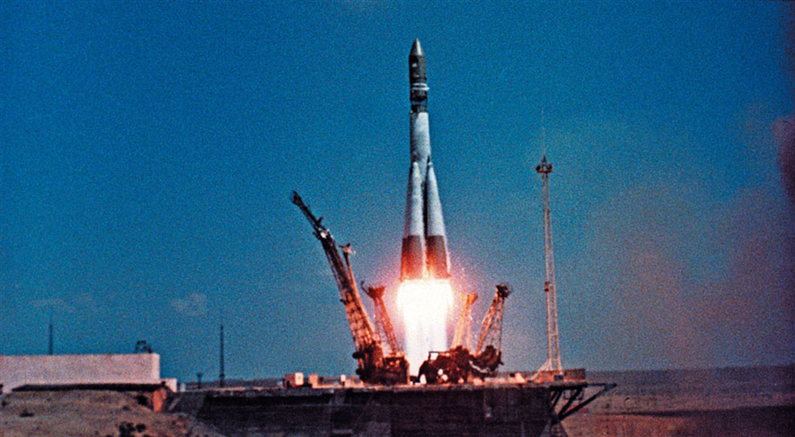

Будущий космонавт Николаев, тогда еще Андриян Григорьев родился 5-го сентября 1929-го года в деревне под названием Шоршелы (Светлые Ключи), Чувашской Автономной Республики. Фамилия Григорьев досталась ему в честь имени отца, причиной чего послужили местные традиции тех лет. Детство и юношество Андрияна прошло в скромном жилье с двумя окнами. После окончания семи классов школы сменил фамилию согласно современным традициям, на фамилию отца – Николаев, и переехал в город под названием Мариинский Посад, где проживал его старший брат. В 1947-м году окончил местный лесотехнический техникум, получил диплом «техника-лесовода». Следующие три года Андриян Григорьевич проработал мастером лесозаготовок на лесном промышленном предприятии «Южкареллес», в поселке Пай, республика Карелия. В 1950-м году Андриян Николаев успевает закончить обучение в школе воздушных стрелков города Кировобад, после чего пол года служит стрелком в УССР, городе Староконстантинов. В 1952-м году Андриян Григорьев завершает один курс обучения в авиационном училище Чернигова, а в 1954-м году Фрунзенское военное училище в столице Киргизии – г. Бишкек. В начале 1955-го года будущий космонавт отправился на службу в качестве воздушного стрелка, а позже – летчика.

11-го августа 1962-го года третий пилотируемый космический аппарат – «Восток-3» стартовал с Земли и космонавтом Николаевым на борту. Ровно спустя день был запущен «Восток-4» с Павлом Поповичем, таким образом, состоялся первый в мире одновременный полет нескольких кораблей. Длительность совместного полета составила 2 суток и 22 часа, за это время космонавты наладили между собой радиосвязь, также провели первую в мире военный космический эксперимент. Его суть состояла в перехвате вражеских спутников, где «Восток-4» исполнял роль цели, а «Восток-3» следовал за ним как перехватчик.
Кроме того космонавты провели ряд медицинских исследований и имели возможность отстегнуться от своих кресел и передвигаться в условиях невесомости.
Спустя 3 суток и 22 часа после старта, облетев Землю 64 раза, космонавт Николаев вернулся на Землю, и поставил рекорд по длительности пребывания в космосе.